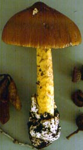
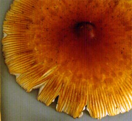
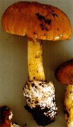
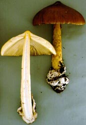
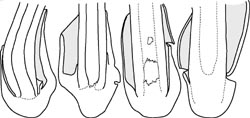

| name | Amanita garabitoana |
| name status | nomen acceptum |
| author | Tulloss, Halling & G. M. Muell. |
| english name | "Garabito's Slender Caesar" |
| images |
 1. Amanita garabitoana, Cordillara Talamanca, Costa Rica.  2. Amanita garabitoana, Cordillara Talamanca, Costa Rica.  3. Amanita garabitoana, Cordillara Talamanca, Costa Rica.  4. Amanita garabitoana, Cordillara Talamanca, Costa Rica.   5. Amanita garabitoana, stipe-volva attachment. Specimens (left to right): a. Tulloss 6-16-95-C. b. Tulloss 6-16-95-K. c. holotype. d. Tulloss 6-15-95-H. |
| intro | This summary is derived from the original description of A. garabitoana (Tulloss et al. 201??). |
| cap |
The cap of Amanita garabitoana is 60 - 212 mm wide, campanulate to strongly convex, finally plano-convex with a slightly depressed center, with a large broad, but subpointed, umbo, viscid when moist, often dull, subglabrous to glabrous, suggesting a fine frost over the center, with a strongly striate to plicate striate margin. The cap is orange brown to olivaceous yellow or yellowish brown to orangish yellow, darkest over the center (for example, olive brown to orange brown to red brown) often with a dark circle at the inner end of the marginal striations. Volva is are absent. The flesh is white to dirty white to pale yellowish white, except yellow to pale yellow under the cap skin in the center just above the stem. |
| gills |
The gills are adnate to narrowly adnate to free, close to crowded, faintly pinkish cream to pale orange cream to pale yellow cream to pale yellow in mass, 4.5 - 23 mm broad, thin to moderately thick and occasionally forked toward the stem or margin, sometimes with a short and very faint, decurrent line on the stem. The short gills are rounded truncate to subtruncate to truncate, plentiful, of diverse lengths, and unevenly distributed. |
| stem |
The stem is 95 - 258 × 15 - 24 mm, light orange yellow to pale yellow to buff to yellowish white to off-white, yellow and frosty looking at the top of stem, unchanging or becoming more orange or more sordid with age, cylindric to narrowing upward, barely or not flaring at top, with a saccate, membranous, soft, white volva almost always connected at only the base of the stem. The flesh of the volva is white, 1.4 - 4 mm thick; the limbus internus is not always distinct or well-preserved, largely white or same material decorating the stem. Below the ring, the stem is decorated with dry scales, ochraceous to dull brownish orange to light orange brown to yellow, darkening from handling. The flesh is white to pale yellow to pale yellow orange, unchanging, stuffed with glistening white fibrillose material, becoming hollow. The ring is light yellow to slightly greenish yellow to sordid yellow to moderate yellow, subsuperior to apical, membranoius, thin, ample, skirt-like, persistent, striate on the upper surface, smooth below. |
| spores |
The spores measure (7.5-) 8.0 - 11.0 (-13.6) × (5.7-) 6.5 - 8.4 (-9.9) µm and are broadly ellipsoid to ellipsoid, rarely elongate and inamyloid. Clamps are present at base of basidia. |
| discussion |
Originally described from Costa Rica and Honduras where it is solitary to subgregarious in association with oak. The species belongs in Bas' stirps Hemibapha (Tulloss 1998) and appears to be most closely related to A. arkansana H. R. Rosen. A world key to Amanita stirps Hemibapha is provided on this site. Species is named for an indigenous military political leader of the Huetares, a people of the central valley of Costa Rica. Garabito resisted Spanish occupation of Costa Rica; he fought to maintain the cultural heritage of his people; he opposed mistreatment of indigenous peoples by the Spanish; and he struggled against the establishment of Catholicism.—R. E. Tulloss |
| brief editors | RET |
| name | Amanita garabitoana | ||||||||||||||||||||||||||||
| author | Tulloss, Halling & G. M. Muell. 2011. Mycotaxon 117: 169. figs. 1-4. | ||||||||||||||||||||||||||||
| name status | nomen acceptum | ||||||||||||||||||||||||||||
| english name | "Garabito's Slender Caesar" | ||||||||||||||||||||||||||||
| etymology |
Garabito + -ana, suffix indicating possession; hence, "of Garabito" Honoring Garabito, an indigenous military-political leader of the Huetares, a people of the Central Valley of Costa Rica. Garabito resisted Spanish occupation of Costa Rica until his capture in 1574. He fought to maintain the cultural heritage of his people and to oppose both the mistreatment of indigenous peoples by the Spanish and the establishment of Catholicism. | ||||||||||||||||||||||||||||
| MycoBank nos. | 518295 | ||||||||||||||||||||||||||||
| GenBank nos. |
Due to delays in data processing at GenBank, some accession numbers may lead to unreleased (pending) pages.
These pages will eventually be made live, so try again later.
| ||||||||||||||||||||||||||||
| holotypes | USJ; isotype, NY | ||||||||||||||||||||||||||||
| selected illustrations | Halling and Mueller. 2005. Comm. Mushr. Talamanca Mtns., Costa Rica: 32. | ||||||||||||||||||||||||||||
| intro |
The following text may make multiple use of each data field. The field may contain magenta text presenting data from a type study and/or revision of other original material cited in the protolog of the present taxon. Macroscopic descriptions in magenta are a combination of data from the protolog and additional observations made on the exiccata during revision of the cited original material. The same field may also contain black text, which is data from a revision of the present taxon (including non-type material and/or material not cited in the protolog). Paragraphs of black text will be labeled if further subdivision of this text is appropriate. Olive text indicates a specimen that has not been thoroughly examined (for example, for microscopic details) and marks other places in the text where data is missing or uncertain. The following material not directly from the protolog of the present taxon is based on original research of RET. | ||||||||||||||||||||||||||||
| pileus | from protolog: 60 - 212 mm wide, orange-brown (e.g., 5C6-7) to olivaceous yellow or yellowish brown (4B-C7) to olivaceous tan (more orange than 4B8) to orangish yellow (4A6), darker over disc [e.g., olive brown (more olivaceous than 5D7-8) to orange-brown (6C8) to red-brown (6E6-7, 10F5)], often with dark zone (brown to chestnut brown) at inner end of marginal striations, drying dark brown, campanulate to strongly convex to convex to planoconvex with slightly depressed disc, with large broadly subconic umbo, viscid to tacky to dry (then subshiny), often dull, subglabrous to glabrous, silky fibrillose to fibrillose to somewhat finely pruinose over disc; context white to pale sordid white to pale yellowish white outside of disc, yellow (3A3) to pale yellow under pileipellis and above stipe in disc or above lamellae, 4.5 - 12.5 mm thick at stipe, thinning evenly for 75% to 85% of radius, then membranous to margin; margin strongly striate to plicate-striate [(0.15R-) 0.5R - 0.75R], incurved at first, remaining at least somewhat decurved, rounded serrate to eroded, nonappendiculate; universal veil absent. | ||||||||||||||||||||||||||||
| lamellae | from protolog: adnate to narrowly adnate to free, sometimes with short (rarely extending to partial veil) decurrent line (sometimes requiring 10× lens) on stipe, close to crowded, faintly pinkish cream to pale orangish cream to pale yellowish cream to light cream to pale yellow to dull white to off-white in mass, white to off-white to pale yellowish white in side view, 4.5 - 23 mm broad, broadest at about 75% of radius from stipe, thin to moderately thick, with entire and concolorous edge, some forked near margin, sometimes with occasional reverse forking; lamellulae rounded truncate to subtruncate to truncate (less frequently subattenuate to attenuate, but commonly so in one collection), unevenly distributed, of diverse lengths, plentiful. | ||||||||||||||||||||||||||||
| stipe | from protolog: 95 - 258 × 15 - 24 mm, with ground color light orangish yellow (ca. 4A5) to pale yellow (3A3) to buff to to yellowish white to off-white, yellow and pruinose at apex, unchanging or with ground taking on more orange tint or becoming more sordid with age, cylindric or narrowing upward, barely or not at all flaring at apex, below partial veil decorated with dry ochraceous to dull brownish orange to light orange-brown (5C5) to yellow brown (ca. 4B7-8) to yellow (2A3-4) floccose to fibrillose scales (becoming darker or more orange from handling), below partial veil minutely fibrillose or finely striatulate (especially with age); context white to pale yellow (2A2) to pale yellow-orange (4A3), unchanging, with larval tunnels concolorous, stuffed with white glistening fibrillose material moderately loosely packed, becoming hollow, with central cylinder 3 - 10 mm wide; partial veil light yellow to slightly greenish yellow (3A4) to dull yellow (4A4-5) to sordid yellow (more sordid than 4A8, more sordid than 4B4) to moderate yellow (not as green as 3A4), subsuperior to subapical to apical (e.g., attached for 5± mm, with 3 - 15 mm free), membranous, thin, copious, skirt-like, persistent, eventually collapsing on stipe and becoming sordid yellow, striate on upper surface, smooth below; universal veil as saccate volva almost always connected at (or very near to) base of stipe, often with considerable rather firm portion below stipe base, 48 - 96 × 30 - 45 mm (often entirely below substrate surface), membranous, soft, with outer surface white (sometimes with orange-brown discoloration) and inner surface pale olivaceous tan to pale orangish white [may become browner (paler than 10YR 8/6) with age], with context white, 1.5 - 4± mm thick; limbus internus not always distinct or well preserved, largely white or largely concolorous with material decorating stipe, at variable distance from point of attachment of volva and stipe, at first firmly connected to sordid yellowish felted material (eventually becoming stipe-decorating squamules and patches). | ||||||||||||||||||||||||||||
| odor/taste | from protolog: Odor mild, indistinct, or fungoid. Taste indistinct. | ||||||||||||||||||||||||||||
| macrochemical tests |
from protolog: Laccase test (syringaldazine) - in material just maturing, negative throughout basidiome. Tyrosinase test (paracresol) - in material just maturing, positive in cap context, pileipellis, lower half of stipe context, universal veil except for very base of volva, partial veil, and on edges (including breaks and cuts) of lamellae. Test voucher: Tulloss 6-21-95-G. | ||||||||||||||||||||||||||||
| pileipellis | from protolog: 75 - 100 µm thick; subpellis yellow-orange, 65 - 90 µm thick; suprapellis minimal, pallidly concolorous to colorless, extensively gelatinized, 10± µm thick, intimately connected to collapsed hyphal detritus of universal veil (see below); filamentous, undifferentiated hyphae 1.0 - 5.0 µm wide, branching, dominating, subradially oriented, densely packed vertically, sometimes with hyphal tips expanded slightly at apex; vascular hyphae 1.4 - 7.1 µm wide, common, sinuous, infrequently branching, without dominant orientation. | ||||||||||||||||||||||||||||
| pileus context | from protolog: filamentous, undifferentiated hyphae 0.9 - 8.5 µm wide, plentiful, branching, frequently fasciculate, forming matrix loosely to densely interwoven around acrophysalides; acrophysalides of two forms, away from stipe apex plentiful narrowly clavate to elongate (e.g., 152 × 28 µm, 95 × 42 µm), above stipe apex dominating and densely packed with longitudinal orientation like stipe context acrophysalides and ovoid to elongate ovoid to subpyriform (up to 74 × 46 µm or larger), in umbo greatly reduced in number; vascular hyphae 2.5 - 17.8 µm wide, branching (especially frequently in region above stipe in disc), sinuous to looping and interweaving in loose "knots," common locally, especially common near pileipellis and in region above stipe in disc; clamps plentiful. | ||||||||||||||||||||||||||||
| lamella trama | from protolog: bilateral; wcs = 25 - 45 µm; subhymenial base dominated by curved intercalary inflated cells (up to 94 × 22 µm) sometimes as pair in chain (together up to 111 µm long) and then arising from filamentous, undifferentiated hyphae arising in central stratum, otherwise arising from short partially inflated clavate segment in manner of chained pair, giving rise to cells of subhymenium; central stratum containing intercalary narrowly fusiform cells (e.g., 62 × 14.0 µm); filamentous, undifferentiated hyphae 3.2 - 4.9 µm wide, with those in subhymenial base sometimes giving rise to cells of subhymenium, vascular hyphae 2.0 - 11.3 µm wide, occasionally branching, often sinuous, uncommon to locally common; clamps common in central stratum. | ||||||||||||||||||||||||||||
| subhymenium | from protolog: wst-near = 105 - 130 µm (crushed?); wst-near = 95 - 105 (very good rehydration, estimated from measurement and partially schematic drawing); wst-far = 150 µm (crushed?); wst-far = 100 - 115 µm (very good rehydration, estimated from measured data and schematic drawing); cellular (pseudoparenchymatous) or dominated by inflated cells, with cells in 2 to 3 layers (1 to 2 layers below longest basidia), with some uninflated branched or unbranched elements arising from inflated cells of subhymenium and giving rise in turn to basidia/-oles, otherwise with basidia arising from inflated cells up to 12.0 × 10.0 µm. | ||||||||||||||||||||||||||||
| basidia | from protolog: 29 - 56 (-59) × (8.1-) 8.5 - 13.0 µm, dominantly 4-sterigmate, rarely 5-sterigmate in immature material, with sterigmata up to 5.5 × 2.0 µm; clamps and proliferated clamps plentiful, prominent. | ||||||||||||||||||||||||||||
| universal veil | from protolog: On pileus: at least in moist conditions persisting to maturity in thin layer (25 - 45 µm thick) and sometimes giving hoary appearance to pileus, at 1250× in cross-section giving appearance of somewhat sparse “curly hair”; filamentous undifferentiated hyphae dominant, collapsed, partially gelatinized, mostly under 2.0 µm wide, curling or coiling, branching, without dominant horizontal orientation; inflated cells very infrequent, soon collapsed and gelatinized; vascular hyphae without dominant orientation, of width similar to other hyphae, moderately frequent, scattered. On stipe base, exterior surface: partially gelatinized, in a relatively shallow layer, interior visible through occasional gaps; filamentous, undifferentiated hyphae 1.7 - 4.2 µm wide, in fascicles up to 12 or more hyphae wide or singly, densely criss-crossed and interwoven, with many larger fascicles longitudinally oriented, with occasional openings giving (on whole) appearance of openings in expanded net shopping bag. On stipe base, interior: rather dense lattice-like structure of plentiful interwoven filamentous, undifferentiated hyphae, enclosing globose to ellipsoid to clavate cells (up to 66 × 38 µm), with such cells plentiful to locally dominating in regions somewhat distant from exterior surface layer, enclosing smaller less frequent often clavate cells near exterior surface layer. On stipe base, inner surface: like interior but broken and gelatinized, indicating gelatinization takes place within universal veil or at interface between universal veil and pileipellis. | ||||||||||||||||||||||||||||
| stipe context | from protolog: longitudinally acrophysalidic; filamentous, undifferentiated hyphae 2.0 - 7.0 µm wide, branching, rather common away from surface, becoming dominant and strongly longitudinally oriented toward outer surface, at which forming dense stipipellis; acrophysalides up to 182 × 24 µm, smaller near exterior surface, with walls thin or up to 0.7 µm thick, with some near surface having yellowish walls; vascular hyphae 2.1 - 10.1 µm wide, sometimes sinuous, infrequent, unevenly distributed. | ||||||||||||||||||||||||||||
| partial veil | from protolog: underside strongly gelatinized; upper side bearing plentiful remnants of inflated cells from former interface to lamellae edges; filamentous, undifferentiated hyphae 1.5 - 4.5 µm wide, branching, dominant in interior, dominantly subradially oriented, dominantly fasciculate (with fascicles mostly 4 to 5 hyphae wide); inflated cells of interior common, clavate, to elongate ellipsoid, thin-walled, up to 28 × 17.5 µm, terminal, solitary, often with subradial orientation of longer axis, unevenly distributed, occasionally in small clusters; vascular hyphae not observed. | ||||||||||||||||||||||||||||
| lamella edge tissue | not described. | ||||||||||||||||||||||||||||
| anatomical figures | |||||||||||||||||||||||||||||
| basidiospores | from protolog: [558/27/16] (7.5-) 8.0 - 11.0 (-13.6) × (5.7-) 6.5 - 8.4 (-9.9) µm, (L = (8.3-) 8.7 - 10.0 (-10.3) µm; L’ = 9.4 µm; W = (6.6-) 6.9 - 7.7 (-7.8) µm; W’ = 7.3 µm; Q = (1.06-) 1.15 - 1.43 (-1.73); Q = (1.22-) 1.24 - 1.37 (-1.40); Q’ = 1.29), hyaline, colorless, thin-walled, smooth, inamyloid, broadly ellipsoid to ellipsoid, rarely elongate, usually at least somewhat adaxially flattened, wand-like or very narrowly clavate in early development; apiculus sublateral (or rarely lateral in immature material), cylindric; contents monoguttulate to multiguttulate, with or without small additional granules; white in deposit. | ||||||||||||||||||||||||||||
| ecology | from protolog: Costa Rica: Solitary to subgregarious, at 1000 - 2500 m elev. In mixed forest with, and sometimes dominated by, Quercus (including Q. brenesii, Q. copeyensis, Q. oocarpa, and Q. seemannii), with or without substantial understory. Honduras: In undisturbed Quercus forest. | ||||||||||||||||||||||||||||
| material examined |
from protolog: COSTA RICA: ALAJUELA—Ctn. Grecia - Grecia, Bosque del Niño, [10°9’4” N/ 84°14’42” W], 31.v.1996 R. E. Halling & J. L. Mata [Halling 7591] (paratype, NY; paratype, USJ).
CARTAGO—Ctn. Unkn. - 5 km E of km 31 of Interam. Hwy., ca. Estrella [9°46’4” N/ 83°57’19” W, 1685-1717 m], 28.vii.1992 B. A. Strack & G. M. Mueller [Mueller 4433] (paratype, F 1102486), 4.vi.1996 R. E. Halling & J. Ammirati [Halling 7603] (paratype, NY; paratype, USJ); Guarco, Tapanti, Parq. Nac. Tapanti, Macizo de la Muerte,
Área de Conservación La Amistad Pacifico [9°41'6" N/ 83°52'30" W, 2600 m], 20.vi.2001 R. E. Halling & J. Carranza [Halling 8198] (paratype, NY; paratype, USJ).
GUANACASTE—Ctn. Unkn. - Cerro Cacao, Estación Biología Cacao, Área de Conservación Guanacaste [10°56’8” N/ 85°27’14” W], 4.vi.1994 J. P. Schmit 475 (paratype, F; paratype, USJ).
SAN JOSÉ—Ctn. Dota - La Chonta, | ||||||||||||||||||||||||||||
| discussion |
from protolog: The (a) relatively shallow subhymenium; (b) subhymenial base dominated by elongate, curved, intercalary cells; (c) plentiful clamps at bases of basidia; (d) habit; (e) proportionately long marginal striations; (f) strongly pigmented pileus and stipe decoration; and (g) broadly ellipsoid to ellipsoid spores indicate that this entity has strong affinity to the group of taxa phenetically similar to A. hemibapha (Berk. & Broome) Sacc. (1887), A. jacksonii Pomerl. (1984), A. arkansana H. R. Rosen (1926), A. hayalyuy Arora and Shepard (Shepard et al. 2008), etc.—taxa of Amanita stirps Hemibapha (Tulloss 1998, and here).
The species of the above cited group that is most similar to A. garabitoana in habit and in size and shape of spores is A. arkansana the known range of which lies within the southeastern United States (Arkansas to the Gulf Coast states (from Texas to Florida). The present taxon differs from A. arkansana in at least the following:
Material examined (Amanita arkansana): U. S. A.: ARKANSAS—Pulaski Co. - Little Rock, Arkansas Dept. of Pollution Control & Ecology, 14.vi.1994 J. Justice s.n. (RET). Washington[?] Co. - E of Fayetteville, E of Mt. Sequoia, 13.x.1925 [packet marked "13.x.1926" (sic)] H. R. Rosen s.n. (lectotype, BPI; isotypes TENN 21294 & 21299). FLORIDA—Alachua Co. - Gainesville, 11.viii.1985 A. Norarevian s.n. [Tulloss 8-11-85-AN1] (RET). MISSISSIPPI—Jackson Co. - Pascagoula R. Wildlife Mgmt. Area, D. C. & R. E. Tulloss 7-16-87-C (RET). TEXAS—Hardin or Tyler Co. - Big Thicket Nat. Preserve, Turkey Crk. Unit, 26.x.1985 A. Norarevian & J. Justice s.n. [Tulloss 10-26-85-A] (RET). Tyler Co. - 8 km E of Spurger, Forest Lake Exp. For., off FM1013, ca. plots 39 & 41, 26.vi.1994 D. P. Lewis 5302 (RET). So far as is known (C. Bas pers. corresp.; Tulloss unpub. data), it is not unusual to find vascular hyphae especially plentiful in the pileus context above the stipe in Amanita. This is an item worthy of further study. Bas (1969 and pers. corresp.) has noted that vascular hyphae are sometimes concentrated in damaged areas of a basidiome in Amanita. Since they arise from filamentous, undifferentiated hyphae (Tulloss unpub. data), it may be the case that they are produced in response to damage or in areas of mechanical stress (such as the stipe-pileus convergence region). One hypothesis might be that the (partially?) insoluble material often seen when a vascular hypha is cut or broken during sectioning may include an antibiotic or some other aid to maintaining the integrity of the basidiome and, hence, reproduction of the species. We also wish to make it clear that we make no claim for novelty with regard to the arrangement of acrophysalides in the center of the pileus. However, it does seem of interest to examine (in the future) the mechanical structure(s) by which the joining of the stipe and cap takes place in Amanita. Mueller 4501 was immature when dried; in measuring spores from a single mount, three 5-sterigmate basidia were noted with the sterigmata bearing content-less, wand-like or very narrowly clavate spores. The single basidiome of this collection is considered by us to be bearing abnormal spores. Mueller 4119 was immature when dried. | ||||||||||||||||||||||||||||
| citations | —R. E. Tulloss | ||||||||||||||||||||||||||||
| editors | RET | ||||||||||||||||||||||||||||
Information to support the viewer in reading the content of "technical" tabs can be found here.
| name | Amanita garabitoana |
| bottom links |
[ Keys & Checklists ] |
| name | Amanita garabitoana |
| bottom links |
[ Keys & Checklists ] |
Each spore data set is intended to comprise a set of measurements from a single specimen made by a single observer; and explanations prepared for this site talk about specimen-observer pairs associated with each data set. Combining more data into a single data set is non-optimal because it obscures observer differences (which may be valuable for instructional purposes, for example) and may obscure instances in which a single collection inadvertently contains a mixture of taxa.

Text and User-Generated Sporographs are published under the Creative Commons License.

In the case of a taxon page, image credits are on the 'image' tab.
{kind=link}
{kind=link}
{kind=link}
{kind=link}
{kind=link}
{kind=link}